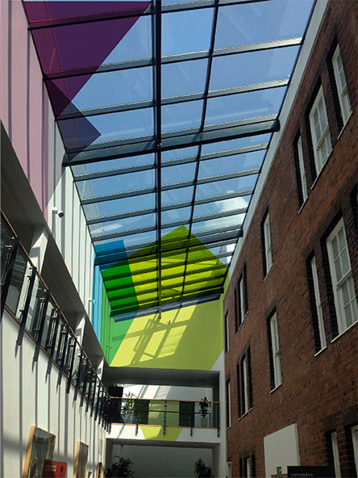

Introduction
Our brief was to provide Birmingham Business School with a visual identity that reflected the personality traits and ambitions identified in the initial research and brand proposition phases of the project.
The challenge was to give the school a distinctive look, whilst still allying it closely with the university. It needed to be readily identifiable in a crowded, competitive marketplace. We also wanted to acknowledge the school's rich history and tradition but project a much more forward-looking, aspirational feel.
The 'boilerplate' brand proposition sets the scene:
Our world-class research and teaching provides the insights, ambitions and skills to shape better, simpler and more sustainable business strategies. We put business in context and people at the heart of business.
Along with the baseline 'hygiene' factors:
- International & diverse
- Prestigious & ambitious
- Innovative & enterprising
There are two key personality traits which we feel are vital to setting Birmingham Business School apart from its peer group:
- Farsighted & holistic
- Empathetic & committed
We have used these to guide the design process.
The identity
The relationship with the mother brand
During the course of our research we quickly established that the school needed to maintain a close relationship with the university. There was never any question of the school becoming an autonomous organisation. There is a huge amount of brand equity in staying closely allied to the university: the challenge was to calibrate the weighting in that relationship.
The new identity is designed to reflect and endorse this close relationship when required, but is also flexible enough to let the school stand confidently on its own as and when necessary.
School name
The school name should be used on all communications, internal and external. To ensure consistent spacing the capital 'B' from Birmingham should be used as a measure. Three 'B' s give the right amount of padding.
How to use the name
When the school is leading the communication, it should be more prominent. The identity can be used to emphasise that this is a message from Birmingham Business School underpinned by the University of Birmingham.
Sizing relationship
As a guide for maintaining the correct relationship between the two components the full width of the 'Birmingham' in Birmingham Business School should be exactly equal to the 'Birmingham' in the University of Birmingham logo.
Position
With Birmingham Business School leading the communication, it should sit in the top left, with the University of Birmingham logo positioned bottom left. To keep the positioning consistent across all communications both Birmingham's should be left aligned.
The lock-up
In a situation where a communication piece requires co-branding, the two components appear as a lock-up. The University of Birmingham logo sits to the left of the school name at an equal height. The three 'B' spacing device should be used to ensure consistency.
Typography
The school will utilise the main university corporate brand typefaces: Akzidenz Grotesk and New Baskerville ITC.
Akzidenz Grotesk BQ
This typeface should be used on a smaller, more informative scale. Light, Regular and Medium are the preferred weights and can be used for body text.
New Baskerville ITC
This elegant typeface is used extensively across the university, usually in the regular weight and relatively small sizes. We would encourage the school to experiment using New Baskerville ITC Bold in larger font sizes to give impact and character to the typography.
Imagery
Photography
Photography can help reinforce the core brand values and we suggest trying to utilize imagery with unusual angles to reference the 'seeing things from a different perspective' aspect of your personality. Including shots of groups of people interacting also references your empathetic/collaborative side.
Illustration/infographics
You are already employing strong graphical illustrations as part of the undergraduate programme and this artwork remains impactful. We would like to see this style retained for use alongside the new identity, although it might be worth reviewing the colourways to align them with the new primary colour palette.
Colour
The new colour palette for the school has been selected from the existing corporate brand palettes. We recommend assigning one of the four main colours to a particular audience group and then ensuring that that colour is used prominently in the communication.
Please note that we have slightly adapted the dark red CMYK and Pantone references, this is so that the colour remains vibrant and accessible in the visual styling we have implemented.
| #c7d100 | |||
|---|---|---|---|
| Pantone 382 | |||
| C | M | Y | K |
| 29 | 0 | 100 | 0 |
| #00b0df | |||
|---|---|---|---|
| Pantone 306 | |||
| C | M | Y | K |
| 77 | 0 | 7 | 0 |
| #7d0644 | |||
|---|---|---|---|
| Pantone 215 | |||
| C | M | Y | K |
| 6 | 98 | 12 | 20 |
| #6b5d76 | |||
|---|---|---|---|
| Pantone 7448 | |||
| C | M | Y | K |
| 32 | 42 | 0 | 55 |
| #c4beb6 | |||
|---|---|---|---|
| Pantone warm grey 5 | |||
| C | M | Y | K |
| 0 | 5 | 10 | 29 |
| #797878 | |||
|---|---|---|---|
| Pantone 425 | |||
| C | M | Y | K |
| 0 | 2 | 0 | 66 |
Visual concept
The set of four facets represent different aspects of the school and allow enough flexibility in implementation to focus just on one particular audience or address multiple audiences simultaneously.
When the facets combine together the intention is for the individual colours to merge, forming a rich, deep black, representing the school in its entirety.

Creating the facets
Each facet is a square and should be used at these pre-determined angles.
How to use the facets
Positioning
There is a good deal of flexibility in how the facets can be positioned and these guidelines illustrate many ways of using them. The only proviso is that the individual angles allocated to each colour must be maintained.
Sizing
Again, flexibility was our aim in creating these facets for the implementation team. The only 'rule' to observe is that the facets are always square and are always the same size in relation to each other.
Using the facets as individual components
Facets can be used as individual components if you need to address a specific audience. The system for this employs a horizon line from which the topmost point of the facet hangs. We don't want to be prescriptive about the exact height of this line, but if publications are being designed as a set, we would suggest that the same horizon line height is used for all of them.
Extra rotation
To give added energy to individual facets, it is possible to add a duplicate facet at +5° or -5° and use the Multiply filter to create further angles, perspectives and colour.
Brochure design
Here we provide some indicative ideas for how the identity can be employed across standard A4 brochureware. Key points to note would be: how the facets can be used singly or in multiples, how tightly they can be cropped and how typography can be approached.
Alternative approach
If a rather more traditional look and feel is required we have created some examples showing how the identity can be employed with full-colour imagery and rather more restrained typography. These examples also show how the facets can be cropped and used as opacity layers to add some distinctiveness to the photography.
Online communications
The identity adapts easily to use online and we have provided a number of examples illustrating how the system could be employed to create a striking presence in a variety of applications. It can be used in its pure form with just the coloured facets or also in conjunction with imagery to create a more approachable, friendly feel.
Website
It was established at an early stage that the school would not have an independent website of its own. This means that the school has to work within the constraints of the existing main university website. The constraints being that the top header and left hand navigation on that site must be retained. Within the rectangle left encased by those two components there is a reasonable amount of flexibility.
We have tried to indicate how the content could, and should, be edited back to concentrate on core information and messaging.
The identity should be used boldly and there could be ways of employing the facets to act as functional components, signposting the way to specific content areas. The muted, neutral colours of the current website act as a foil to the boldness of the new identity colours.
Home page
Course page
Profile page
Email newsletter
Email signature
Social media
Motion graphics
The new identity has been specifically designed with motion graphics in mind. We want the facets to illustrate various narratives about the school: 360° - looking at things from a different perspective; Empathetic - independent elements coming together to create an entity, etc.
The animations should be used to help establish the school as a vibrant, forward-looking institution.
Intro stings
These examples could be used as intros for school videos or backdrop screens at events, school buildings, seminars, conferences before the speaker starts a presentation.
Video captioning
It would be useful to be able to employ the new look and feel to brand your video outputs right down to the way in which talking heads are identified. This example shows a technique for achieving this.
Advertising
These rough mock ups show how the facets could be employed in raising brand awareness in specific areas such as escalator sites.
Creating a tribe
The research provided ample evidence that the school was suffering from a complete lack of identity. Although staff and students were well-disposed towards the school, they had nothing to hold on to and identify with. There was a clear hunger to feel a part of the school specifically rather than the overall university.
That is why the ideas in this section are so important. They range from the cheap and cheerful – cups, bags, brollies etc. – through to rather more ambitious projects such as facet transfers on the roof and custom signage. All are geared to giving the school a real sense of self. These are just the initial ideas we have had. The implementation team can use these as the basis for creating the flag for people to rally around.
Stationery
Coffee cup
Laptop sleeve
Umbrella
Tote bags
Undergraduate focused
Postgraduate focused
MBA focused
Undergraduate only
Environment
Roof transfer
Custom signage
Tone of voice
Whenever we communicate on behalf of Birmingham Business School it should be in our tone of voice. Our tone of voice gives us a clear direction for written communications. Tone of voice only works when it’s expressed consistently. The following provides an outline as to the tone of voice to use in written communications.
An introduction to how we talk about what we do and who we are:
We are 'energetic' - upbeat and inspiring
We bring energy and enthusiasm to everything we do. We are open to new ideas. We inspire those that we come in to contact with through the quality of our insights, our fresh thinking and our desire to create better outcomes for students, graduates, staff and businesses.
We are 'expert'- informed and intelligent
We have expertise in many fields among our faculty and professional staff, creating informed and intelligent debate about the future of business. Our teaching is informed by our research and our teaching seeks to share the insights that our research delivers. Working with partners we aim to build our knowledge, together helping each other to learn and using that understanding to grow better businesses and organizations through informed and skilled people.
We are 'enterprising' - imaginative and playful
We believe in the power of imagination, seeking new ways to tackle problems and deliver better business solutions. We believe in the power of enterprise to help students, businesses and ourselves to discover and develop innovative approaches for future business growth.
We are 'empathetic' - warm and personable
We believe in and value people. We believe business is about so much more than money, it’s about the people who work in businesses and organizations, their customers, suppliers and those in our society who rely on the wealth created by business.
We are 'world class' – excellent and sustainable
We are recognised through our triple accreditation with AACSB, AMBA and EQUIS as delivering sustainable world-class business and management education. We are part of a world-class university, recognised globally for its excellent research and teaching. We are part of a global knowledge community, working with institutions around the world, partnering with colleagues on research and teaching students from across the globe.